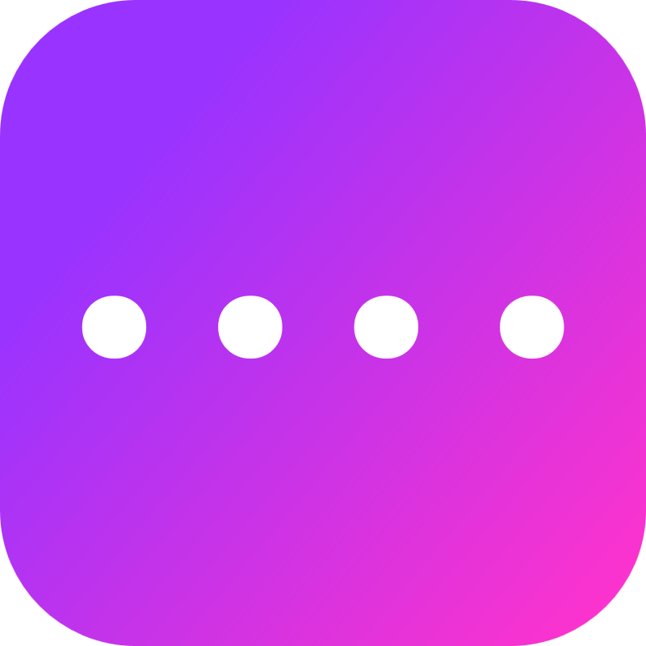

PassForge
Forge memorable, secure passwords in seconds
Click "Generate" to create a password
Generate
Copy
Settings
Number of words
Numbers to add
Symbols to add
Capitalize first letter of each word
Use separator between words
Custom word list (one word per line)
Using 200 default words
Reset to defaults